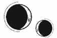

CAPÍTULO 75
Julius 1789
Las MONTAÑAS DE Novis se recortaban contra un cielo carente de estrellas y Helena hizo que Amaris las dejara atrás para volar en dirección sur.
La última vez que Helena había volado a lomos de la criatura, esta era mucho más pequeña en todos los sentidos. Ahora que había crecido, sus alas se desplegaban fuertes y firmes. En cuanto señaló hacia el sur, Amaris enseguida entendió que tenía que seguir el curso del río.
La oscuridad que se extendía bajo ellos era casi infinita, interrumpida solo por los racimos de luz de los pueblos y las ciudades que iban dejando atrás. Allí donde miraba, Helena únicamente veía una negrura inabarcable. Enterró el rostro en la espalda de Kaine mientras se esforzaba por respirar.
—No mueras —repetía una y otra vez, apoyando la frente contra el hueco entre sus omoplatos, atenta al débil latido de su corazón para asegurarse de que seguía vivo.
No habría sabido decir cuánto tiempo estuvieron volando; la noche parecía no tener fin. Sin previo aviso, Amaris empezó a descender y Helena estuvo a punto de caerse de la silla de montar. Por un instante aterrador, temió que se precipitaría al vacío.
Kaine recuperó la consciencia de una sacudida y echó el brazo hacia atrás para sujetarla con firmeza mientras ella intentaba recuperar el equilibrio y apretaba las piernas alrededor de la criatura. Las tenía tan cansadas que ya casi no alcanzaba a sostenerse.
Amaris aterrizó con rapidez y mordió con fuerza su propia lengua para no maldecir. Miró a su alrededor desesperada por averiguar dónde se encontraban mientras la quimera seguía abriéndose paso al trote por la oscuridad. Llevaban una linterna en una de las alforjas, pero ya no recordaba en cuál exactamente. Amaris se detuvo y esperó a que Helena descendiera. La criatura era varios palmos más alta de lo que recordaba, así que sus pies no tocaron el suelo cuando se bajó de su lomo y acabó cayendo sobre el espeso pasto. Se quedó tumbada contemplando las estrellas, que trazaban un camino resplandeciente por el cielo.
Antes del Desastre, se decía que la gente viajaba utilizando las estrellas para orientarse, pero ese era un conocimiento que se había perdido con el tiempo. Helena se incorporó con esfuerzo.
—Kaine —lo llamó abriéndose paso a tientas por la oscuridad. Primero encontró el pelaje de Amaris y, luego, la pierna y la bota de Kaine, enganchada al estribo—. No sé dónde estamos. ¿Qué hacemos ahora?
Kaine levantó la cabeza despacio. En la oscuridad solo alcanzaba a distinguir su silueta, pero Helena vio que intentaba bajarse de la quimera antes de darse cuenta de que estaba atado a la silla de montar. Buscó a tientas la cabeza de Amaris y la instó a agacharse para encontrar las cinchas y sujeciones, y soltarlas lo mejor que pudo sin ver nada. Kaine apoyó su peso en ella nada más desmontar.
—Hay una cabaña de caza justo… —dijo con voz ronca.
Avanzaron despacio hasta encontrar unos escalones y una puerta de madera. Una vez dentro, Helena encendió la lámpara que vio sobre la estantería de la entrada. Era una choza sencilla y rústica, pensada solo para pasar la noche.
Había dos camas estrechas, pero Kaine y Helena se derrumbaron sobre una de ellas sin molestarse en quitarse las botas ni la capa.
—Lo hemos conseguido, Kaine. Como siempre soñamos.
Helena se despertó con la espalda ardiendo y la muñeca izquierda palpitándole tan violentamente que el dolor casi le nublaba la mente. Abrió los ojos con esfuerzo y miró a su alrededor desconcertada hasta que recordó dónde se encontraban.
Kaine estaba sentado a su lado, despierto pero exhausto. Estaba inclinado hacia delante y tenía una mano apoyada en el pecho, como si se le hubieran partido todas las costillas.
—¿Estás… bien? —le preguntó ella incorporándose con dificultad.
—Sí. —Kaine asintió con brusquedad—. Estoy seguro de que pronto me recuperaré.
Su voz todavía seguía ronca. Se había debido de lesionar gritando durante el ritual y su cuerpo tardaría en curarse por sí solo.
—¿A qué te refieres? —Intentó tocarlo, pero sus dedos solo consiguieron rozarle el abrigo. Se sentía tremendamente débil—. ¿Qué te ocurre?
—No es nada. Es que no estoy acostumbrado a sentirme… humano.
Helena logró acercarse lo suficiente para tocarlo. Tenía razón, todo iba bien, pero ahora su cuerpo era tan delicado como una tela de araña. Bastaba con que uno de sus hilos se rompiera para que todo su esfuerzo se viniera abajo.
Apoyó la cabeza en su hombro y respiró despacio.
—Deberás tener más cuidado de ahora en adelante. Tu alma podría tardar meses o incluso años en reintegrarse completamente. No podrás utilizar ni la vivemancia ni la animancia ni nada que dependa de tu vitalidad. Un error bastaría para matarte. Ya no tienes opción de apoyarte en el sello. No te regenerarás, y eso podría hacer que se te abran las heridas de la espalda de nuevo.
Kaine le colocó un mechón de pelo tras la oreja.
—Eso ya me lo dijiste ayer. ¿Sabes que tengo la costumbre de escucharte cuando hablas?
Helena asintió, pero no pudo evitar insistir:
—Debes tener cuidado.
—Te prometo que lo tendré. ¿Tú estás bien?
—Solo estoy cansada —dijo volviendo a dejarse caer sobre el colchón, aunque el dolor que se le extendió por los hombros la abrasó como si la hubieran vuelto a marcar con un hierro al rojo vivo.
—¿Qué tal la espalda?
Helena se estremeció. Habría preferido no hablar del tema, porque sabía que no le haría ninguna gracia no poder curarla.
—Creo que se me ha pasado el efecto del analgésico y me está empezando a doler un poco. —Kaine hizo ademán de tocarla, pero lo detuvo—. Quieto. Solo necesito un minuto. Aplícame el ungüento y nos vamos.
—Descansaremos hasta que caiga la noche —dijo él mientras se disponía a hacer lo que le había pedido—. Amaris es demasiado reconocible como para viajar a plena luz. Tardaremos un par de días en llegar a la costa.
Cuando Helena volvió a abrir los ojos, ya había anochecido y Kaine estaba guardando sus pertenencias en las alforjas. Levantó la vista en cuanto notó que se había despertado.
—¿Te ves con fuerzas de retomar el viaje?
Se habrían quedado en aquella cabaña si le hubiera dicho que no, pero Helena era consciente de que, cuanto más se alejaran de Paladia, más difíciles resultarían de rastrear. Era una carrera contra reloj y la latencia de Lumitia no iba a esperar por ellos.
—Sí —mintió.
Volaron durante casi toda la noche. Cuando Amaris volvió a descender, el cielo había empezado a teñirse con el color plateado del amanecer. En esa ocasión no contaban con una cabaña, así que Kaine retiró la silla de montar y durmieron contra uno de los flancos peludos de Amaris, con sus alas negras sirviéndoles de pantalla ante la salida del sol.
Cuando Helena abrió los ojos, Kaine seguía a su lado, con el rostro orientado hacia ella, como si se hubiera quedado dormido mirándola. Bajo la tenue luz del amanecer, recorrió con la mirada sus facciones, ahora mortales.
Eran libres.
Se le encogió el corazón. Tenía la sensación de estar viviendo un sueño, como si un solo paso en falso bastase para que todo se desmoronara. No terminaba de creerse que Kaine estuviera realmente allí. Y, si de verdad era real, algo le decía que su felicidad no duraría mucho.
Las cosas buenas de su vida no solían hacerlo.
Kaine permanecía tan quieto que sintió el impulso de tocarlo. Lo rozó con dedos temblorosos y, al instante, él frunció el ceño y abrió los ojos. Se le iluminaron en cuanto la vio.
—Hola —se limitó a decir; estaba demasiado abrumada como para encontrar algo mejor. Carraspeó y se sentó—. Tengo que comprobar cómo estás.
Amaris se puso en pie, se estiró y desapareció entre los árboles mientras Helena le abría la camisa a Kaine y posaba una mano en su pecho para saber cómo se encontraba ahora que había descansado lo suficiente.
Seguía sin irradiar la energía de una persona corriente, eso era innegable, pero ni aun así podía hacer nada más aparte de darle tiempo y rezar para que su cuerpo recuperara un mínimo de normalidad. Su vitalidad era débil, como si el más mínimo roce pudiera desintegrarla.
Y su condición física también le preocupaba. Lo mejor habría sido esperar. Todavía se estaba recuperando de lo que Morrough le había hecho, y era posible que nunca volviera a ser el mismo. Tanto su ritmo cardiaco como sus temblores le parecían preocupantes, y el sello de su espalda amenazaba con carbonizarlo si se dejaba llevar por su poder. Todo ello hacía que a Helena se le formara un nudo en la garganta. Las manos empezaron a temblarle.
—Hay cosas que estás acostumbrado a tratar como ordinarias y que ya no puedes soportar.
—Lo sé —respondió él todavía con voz ronca.
Helena se acercó un poco más a él y le tocó el cuello para curarle el tejido afectado.
—Sé que lo sabes si te paras a pensarlo, pero tendrás que procurar no actuar por instinto. Llevas años adquiriendo malos hábitos de los que ni siquiera eres consciente.
Aquella idea le resultaba aterradora. ¿Y si los atacaban? Kaine se defendía bien en el combate, pero no sabía luchar sin la ayuda que le otorgaba su inmortalidad.
Debería haberlo planeado todo mejor. Kaine le había insistido en que necesitaba recobrar fuerzas, pero ella se había centrado demasiado en su investigación. Y, aunque gracias a ello había conseguido salvarlo, ¿qué pasaría si los atacaban y no era capaz de defenderse? Kaine moriría y todo habría sido en vano.
El miedo le cruzó el pecho como una fisura que se abría entre sus costillas.
Miró a su alrededor tratando de encontrar la alforja donde había guardado sus cuchillos. Los iba a necesitar. Debería llevarlos encima.
Pero la claridad era tan cegadora que…
—Helena. Helena, respira. Mírame. Te prometo que tendré cuidado. No dejaré que nada me aleje de ti.
Ella intentó asentir, pero se le formó un nudo en la garganta.
—Pero ¿y si algo sale mal? —preguntó con la voz estrangulada—. Todo se va a desmoronar. Siempre… pasa igual.
Trató de alejarse de él mientras miraba en todas direcciones a su alrededor. Allí, al descubierto en medio de un bosque que se extendía hasta donde alcanzaba la vista, estaban expuestos a todo tipo de peligros. Y ya no solo estaba pensando en los inmarcesibles, sino en cualquier otra amenaza.
Kaine la obligó a darse la vuelta para que lo mirara a los ojos.
—Mírame. No hemos dejado ningún rastro. Llevo meses dando caza a fugitivos, así que sé perfectamente lo que hace que a uno lo capturen. No nos van a atrapar. Si antes luchaba sin cuidado era porque podía permitírmelo, pero he aprendido a ser más precavido. La regeneración lenta me ha enseñado esa lección. Mírame. Confié en ti y has conseguido traernos hasta aquí. Ahora te toca a ti confiar en mí. —Helena asintió con un estremecimiento y él extendió las manos hacia su regazo—. Ahora, ¿me explicas qué te ha pasado en la mano?
Ella bajó la vista. Tenía el dedo meñique y el anular izquierdos curvados hacia dentro, inmóviles. Cerró el puño para disimularlo.
—El sello tenía mucha fuerza y tuve que forzarme un poco para llevar a cabo el ritual. El nervio cubital se me… desgarró. He intentado curarlo, pero… el daño ha sido demasiado grave y ya no hay nada que hacer.
Kaine le cogió la mano con delicadeza y le estiró los dedos. Cuando le acarició la zona afectada con el pulgar, Helena no sintió nada ni en los propios dedos ni en la parte externa de la palma. La mano se le estremeció.
—No importa —lo tranquilizó—. Ni siquiera es mi mano dominante, así que todavía puedo practicar la alquimia. Seguro que ni lo noto en cuanto me acostumbre.
—Para —dijo él apretando los dientes—. No hagas como si no tuviera importancia.
—Me ha permitido tenerte aquí conmigo, así que ha merecido la pena —replicó ella soltándose y utilizando la comida que guardaban en las alforjas de excusa para buscar sus dagas y escondérselas entre la ropa.
Pasaron las horas. Cuanto más tiempo permanecían libres, más crecía el nerviosismo de Helena. Kaine también parecía inquieto, aunque lo disimulaba mejor. Le habría gustado salir a explorar la zona y comprobar que efectivamente estaban a salvo ahora que había recuperado un poco las fuerzas, pero se quedó con Helena, velando su sueño. Ella seguía durmiendo inquieta, aferrada a su camisa y con el rostro hundido en su pecho.
Después de su siguiente vuelo, llegaron a otra cabaña de caza, tan exhaustos que apenas hablaron. Se limitaron a meterse en la cama y dormir entrelazados hasta última hora de la tarde. Cuando Helena se despertó, Kaine estaba sentado a su lado. Sus ojos desprendían de nuevo un ligero resplandor.
Parecía una pintura al óleo.
Ahora que un brillo posesivo volvía a brillar en su mirada, Helena se dio cuenta de que no lo veía desde que había tomado la determinación de dejarla marchar. Kaine se inclinó sobre ella y la besó.
Helena le rodeó el cuello con ambos brazos, desesperada por sentirlo cerca, por hacerle un hueco bajo la piel, entre las costillas, dentro del corazón. Quería tenerlo tan cerca que nada pudiera separarlos. Quería que el miedo a perderlo por fin desapareciera.
El tiempo había jugado en su contra. Por fin empezaba a notar lo hambrientos que los había dejado el sobrevivir durante años a base de momentos robados.
No se dio cuenta de que ya no le dolía la espalda hasta que estuvo tumbada a su lado, mientras trazaba distraídamente las cicatrices del sello. Las molestias deberían haber vuelto, pero no lo habían hecho. Estiró el brazo hacia atrás y se tocó los hombros. Kaine se incorporó.
—¿Qué has hecho? ¿Me has curado? —Se volvió para mirarlo—. ¿Qué te he dicho? Te advertí que no debes utilizar la vivemancia.
—Estoy bien —dijo él, sin el menor atisbo de remordimiento—. He tenido cuidado y ya sabes que en muchos casos no hace falta recurrir a la vitalidad para sanar. Ya estabas bastante maltrecha para afrontar este viaje como para tener que soportar el dolor que mi padre te grabó a fuego en la espalda.
Helena le tocó el pecho con dedos temblorosos por miedo a lo que fuera a encontrarse, temiendo que Kaine ya se estuviera desvaneciendo. ¿Y si se hubiera despertado y se lo hubiese encontrado muerto a su lado? Tendría que haber averiguado ella sola lo que había pasado. Lo sondeó varias veces con su resonancia.
Tuvo que tragar saliva antes de ser capaz de hablar.
—No deberías haber hecho eso —dijo con voz temblorosa—. No merecía la pena. Muchas personas se recuperan de una quemadura sin necesidad de recurrir a la resonancia. Estaba bien. Te lo prometo.
Kaine le acunó el rostro entre las manos.
—Mírate, Helena. Te has roto mil veces por mi culpa y no pareces darte cuenta de que eso me mata. No tiene sentido seguir viviendo si tú tienes que pagar el precio por ello. Déjame arreglarlo como pueda.
Helena cerró los ojos y apoyó de nuevo la cabeza sobre su pecho, escuchando sus latidos y obligándose a creer que no le había pasado nada por curarla.
—Tenemos que dejar de hacernos daño a nosotros mismos por el bien del otro —dijo al final—. Y eso va por los dos. No llegaremos muy lejos si no aprendemos a demostrarnos nuestro amor de otra forma.
Retomaron el vuelo en cuanto cayó la noche. A Helena se le cortó la respiración al ver que algo inmenso y de un suave tono entre rosado y plateado aparecía ante ellos en medio de la oscuridad.
Era el mar.
Viraron hacia la izquierda y se alejaron del río.
Kaine parecía saber exactamente adónde se dirigían pese a que casi no se veía nada. Sobrevolaron varias masas de agua y un pueblecito, pero no se detuvieron. Siguieron adelante hasta ver el suave destello de una luz que se colaba entre los postigos de una casa.
Amaris descendió directamente hacia ella y el viento que levantaba con sus alas hizo que esos mismos postigos se estremecieran. Helena desmontó, con las piernas doloridas.
La puerta se abrió de repente y la cálida luz que brotó del interior la cegó.
En el umbral, envuelta en un halo de luz, estaba Lila.